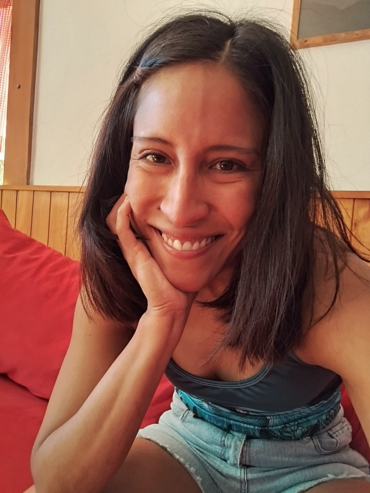

Hello world!


Hola, soy Ana!! Doctora en física con experiencia en investigación y en docencia universitaria. A lo largo de mi carrera, he trabajado en distintos proyectos, combinando análisis teórico y herramientas computacionales para resolver problemas complejos. Publico mi trabajo en revistas científicas y en presentaciones para congresos internacionales con el objetivo de que el conocimiento especializado sea accesible, claro y comprensible para quienes lo necesitan.
Actualmente estoy en búsqueda de nuevos desafíos que me permitan explorar la frontera del conocimiento, difundir información a más personas y seguir aprendiendo cosas nuevas.